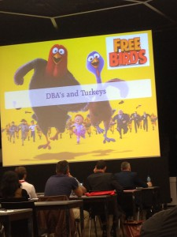
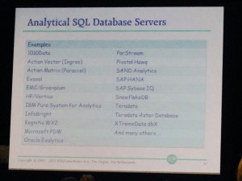

We (DBAs) look at this NoSQL hype with a large smile. We know how powerful are SQL databases and we can’t imagine processing data seriously without it. And the technologies that come with NoSQL brings back the problem that we have solved with SQL databases. But can’t we ignore what is currently going on. Behind the Big Data buzzwords there are real requirements. And if we refuse to listen to them, we will not have the opportunity to show what SQL database can do for it. And the benefit of 30 years of structured data and ACID transactions will be lost.  This picture comes from last week Swiss BI Day in Geneva where Rick van der Lans presented ‘The Battle for Data’. The speech was addressed to BI teams and presented how traditional datawarehouses have evolved to analyze big data. Yes, today business decisions are made on analyzing huge amount of information coming from social networks, e-mails, sensors, etc. We need databases to do those analytics. Traditional databases (RDBMS) or new analytic technologies, NoSQL, Hadoop, etc. And the message was: don’t ask the DBA if we have to abandon SQL databases… in the same way as you don’t ask to turkeys what to eat for Christmas…
So my message is: If you think that, as a DBA who has large experience on data, and who knows technologies that are reliable for that, and who have seen in the past the technologies that are more flexible but finally made data inconsistent and unsecured, then don’t be seen as the turkey.
Listen to the requirements and show that you can really give an objective opinion about it.
Be prepared to learn, use, and teach all the analytical features of current RDBMS (Oracle has Analytic functions, Parallel Query, Bitmap Indexes, In-Memory option, Data Mining options, etc). If you don’t know them you can’t ask BI team to use your database instead of looking for something else.
Today we have lot of CPU cores in our servers and we need to use more than one process to handle big data. Using all CPU in the server or from several servers in a cluster is not new at all. I’ve written previously Oracle Parallel Query: Did you use MapReduce for years without knowing it? where I show Parallel Query execution plans already available in Oracle 7. It has evolved a lot, but is still not very used. Ok, the ‘g’ in ’10g’ and ’11g’ was marketing. We’re not doing grid. We don’t have 1000 nodes in our RAC. But we have dozens of cores. Don’t run analytic workloads on only one thread.
SQL is an old language coming from 30 years ago where we tried to speak English to computer. Yes that’s right, the syntax looks old. But SQL is still the most powerful declarative language where you describe the result you want and let the engine find out the best way to get it. And it has evolved. Look at http://modern-sql.com/ to see how SQL has evolved since SQL-92 and use the latest features.
 Don’t be the DBA that consider only OLTP requirements. BI has different needs: large volume, large TEMP, large UNDO, large PGA, different dev-test-preprod-prod cycle, lot of DDL to load in bulk, etc. And if you ignore those differences between OLTP and BI, then the BI team will go to other technologies. They will go to NoSQL and because you ignore them, nobody will manage the NoSQL infrastructure. Or they will go to SQL database that you don’t even know yet. Look at the slide here. This is a list of SQL databases that can handle analytic requirements – according to BI guys. Look carefully. Do you see the RDBMS you are working on?
{kind=link}
{kind=link}